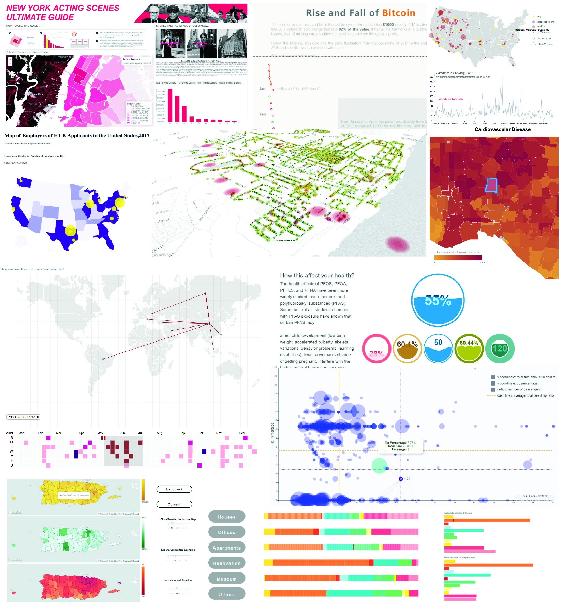

Final Projects
See below for project summaries:

What is the Trend of Material Usage in Architecture Design?
- Chenyan Zhou, Ge Guo ♦ Slides ♦ Summary
A Day in the Life
- Mike Soderberg
Wildfires and Air Quality
- Helen Pierson ♦ Slides ♦ Summary
Can travel patterns reveal shifting governance styles of Chinese presidents?
- Kyi Yeung Goh, Luyun Shao ♦ Slides ♦ Summary
What’s in the Water?
- Lucy Navarro, Allison Fricke, Sanggyu Shin ♦ Slides ♦ Summary
“NEW YORK ACTING SCENES
ULTIMATE GUIDE”
- Joree Liu, Zeyi Jiang ♦ Slides ♦ Summary
H1-B Data Study
- Gauri Bahuguna ♦ Slides ♦ Summary
The Rise and fall of Bitcoin
- Yichen Ouyang ♦ Slides ♦ Summary
Predicting Puerto Rico
- Qi Yang, Esteban Vanegas ♦ Slides ♦ Summary
World Bank Secondary Education Programs in Tanzania
- Seung Yeun Ahn
Mapping Air Pollution & It’s Consequences in California
- Garrett Riha ♦ Slides ♦ Summary
Newburgh Tree Index
- Zeid Ghawi, Berkhan Eminsoy ♦ Slides ♦ Summary
NYC Yellow Cab Data and tipping percentage patterns
- Yingjun Mou, Xiaoyan Wang ♦ Slides ♦ Summary